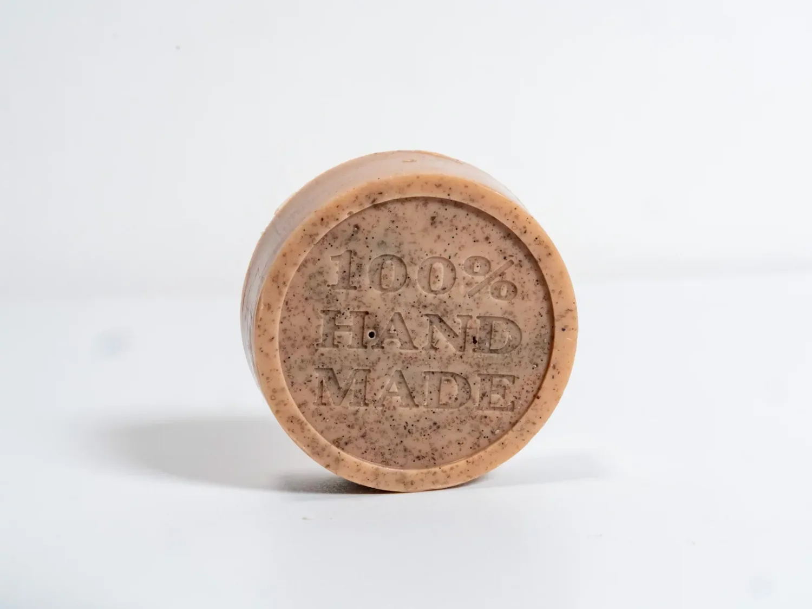

Dal blog
Il ritorno della saponetta: una scelta più autentica, naturale e sostenibile

2026-05-20 (UTC+01:00) Europe/Rome
Per anni la saponetta è stata considerata un prodotto semplice, quasi “del passato”, sostituita da detergenti liquidi, confezioni in plastica e cosmetici sempre più industrializzati.
Eppure, oggi sempre più persone stanno tornando a scegliere le saponette artigianali.
Non per nostalgia.
Ma per una scelta più consapevole.
Noi di NaBeS crediamo che la saponetta rappresenti uno dei modi più autentici di prendersi cura della pelle: essenziale, concreta e profondamente legata alla tradizione della cosmetica naturale.
Formulate con ingredienti che la pelle riconosce. Ogni saponetta NaBeS nasce da una selezione accurata di ingredienti vegetali e materie prime ispirate alla natura.
Utilizziamo:
· burri vegetali nutrienti come karité e cacao
· oli vegetali estratti a freddo
· erbe botaniche e piante officinali
· argille naturali
· estratti vegetali
· oli essenziali selezionati
Ogni ingrediente viene scelto non solo per il profumo o l’estetica, ma soprattutto per le sue proprietà e per la sensazione che lascia sulla pelle. Le texture, i colori e le sfumature delle nostre saponette non cercano la perfezione industriale.
Raccontano la materia viva con cui sono create.
La lavorazione a freddo: tempo, cura e artigianalità.
Molte delle nostre saponette vengono realizzate attraverso il metodo di saponificazione a freddo.
È un processo artigianale che richiede tempo, precisione e pazienza.
La lavorazione a freddo permette di:
· preservare meglio le proprietà degli oli vegetali
· mantenere una parte naturale della glicerina prodotta durante la saponificazione
· ottenere una saponetta più delicata e ricca
· creare formule più vicine alla filosofia della cosmetica naturale
Dopo la produzione, ogni sapone necessita di un lungo periodo di stagionatura prima di essere pronto all’utilizzo.
In un mondo abituato ad una produzione sempre più veloce, basato più su quantità da immettere sul mercato, anziché sulla qualità, questo processo tende a seguire il percorso inverso, prestando attenzione alla qualità ed alla manualità, impiegando il tempo necessario.
Non tutte le saponette sono uguali
Per molto tempo le saponette industriali sono state associate a formule aggressive e troppo sgrassanti.
Ma una saponetta artigianale formulata con attenzione è completamente diversa.
La qualità degli oli, dei burri e degli ingredienti botanici può trasformare un gesto quotidiano in un vero rituale di benessere.
Una buona saponetta naturale può aiutare a:
· detergere delicatamente
· rispettare il film idrolipidico della pelle
· offrire una sensazione più morbida e confortevole
· valorizzare ingredienti semplici ma funzionali
· ridurre ingredienti superflui
Anche il packaging fa parte della nostra filosofia.
Per questo NaBeS utilizza confezioni in latta riutilizzabili, pensate per proteggere il prodotto riducendo il più possibile gli sprechi inutili.
Le latte possono essere riutilizzate nel tempo per:
· conservare saponi
· custodire piccoli oggetti
· viaggiare
· organizzare accessori quotidiani
Crediamo che il packaging debba avere una seconda vita, non diventare immediatamente un rifiuto.
Per noi sostenibilità significa anche creare oggetti belli, utili e durevoli.
La bellezza dell’essenziale
Forse il futuro della cosmetica non sarà avere prodotti sempre più complessi.
Forse sarà tornare a formule più essenziali, trasparenti e vicine alla natura.
Le saponette rappresentano anche questo:
· una bellezza più lenta, più concreta e meno costruita.
· Una cosmetica che mette al centro:
· gli ingredienti
· la formulazione
· la qualità reale
· il rispetto per la pelle
· il rispetto per l’ambiente
Perché a volte le cose più semplici sono anche quelle più autentiche.
NaBeS
Archivio
2026
Altre news della categoria
Meno packaging, più sostanza. La scelta consapevole di NaBeS
NaBeS sta scegliendo di riflettere su un approccio più essenziale e consapevole....
NaBeS 2026-05-20 (UTC+01:00) Europe/Rome
Commenti (0)
Dal più recente
Dal meno recente
Non ci sono commenti
Lascia un commento
Nome*
E-mail*
Messaggio*
Il tuo indirizzo email non sarà pubblicato o condiviso. I campi obbligatori sono contrassegnati con *